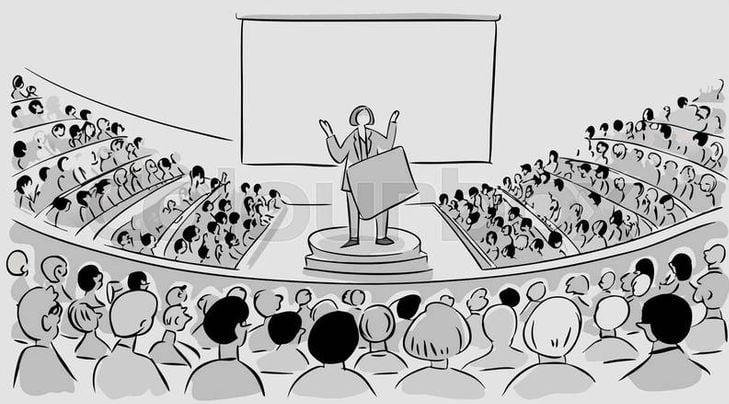

Offline Website BuilderMata kuliah Ilmu Komunikasi mempelajari proses penyampaian pesan dari pengirim ke penerima agar tercipta pemahaman bersama. Mahasiswa belajar teori, model, dan praktik komunikasi dalam berbagai konteks seperti interpersonal, organisasi, dan media massa.
Teori komunikasi menjelaskan bagaimana pesan disampaikan, diterima, dan dipahami dalam proses interaksi manusia.
Strategi komunikasi adalah cara atau langkah yang dirancang untuk menyampaikan pesan secara tepat agar tujuan komunikasi dapat tercapai.

PR Writing adalah kegiatan menulis pesan komunikasi yang bertujuan membangun citra positif dan hubungan baik antara organisasi dengan publiknya.
Corporate Media adalah media yang dikelola perusahaan sebagai sarana komunikasi resmi untuk menyampaikan informasi, nilai, dan identitas perusahaan kepada publik.
Offline Website Builder